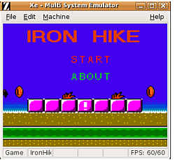

Xe
Archivierte Anleitung
Dieser Artikel wurde archiviert, da er - oder Teile daraus - nur noch unter einer älteren Ubuntu-Version nutzbar ist. Diese Anleitung wird vom Wiki-Team weder auf Richtigkeit überprüft noch anderweitig gepflegt. Zusätzlich wurde der Artikel für weitere Änderungen gesperrt.
Zum Verständnis dieses Artikels sind folgende Seiten hilfreich:
Xe  ist ein Multi-System-Emulator, der auch für Linux entwickelt wird und mit dem man viele unterschiedliche Konsolen emulieren kann. Momentan unterstützt er folgende Systeme:
ist ein Multi-System-Emulator, der auch für Linux entwickelt wird und mit dem man viele unterschiedliche Konsolen emulieren kann. Momentan unterstützt er folgende Systeme:
SG-1000
NES (Famicom)
Super NES (Super Famicom)
Game Boy & Game Boy Color
Master System (Mark 3)
Mega Drive (Genesis)
Mega CD
Game Gear
Turbo Grafx 16 (PC Engine)
Neo Geo
Neo Geo CD
Neo Geo Pocket
Wonder Swan
CPS Changer
Hinweis:
Neo Geo, Neo Geo Pocket und Neo Geo CD funktionieren nicht out-of-the-box. Hier fehlen die BIOS-ROMs, die auf der Homepage aber nicht angeboten werden.
Installation¶
|  |
| Iron Hike |
Zuerst muss man folgende Pakete installieren [1]:
libasound2-dev
libxv-dev
libxxf86vm-dev
libxext-dev
libxinerama-dev
libgtk2.0-dev
 mit apturl
mit apturl
Paketliste zum Kopieren:
sudo apt-get install libasound2-dev libxv-dev libxxf86vm-dev libxext-dev libxinerama-dev libgtk2.0-dev
sudo aptitude install libasound2-dev libxv-dev libxxf86vm-dev libxext-dev libxinerama-dev libgtk2.0-dev
Dann lädt man sich von der Homepage  das entsprechende Archiv herunter und entpackt dieses [2].
das entsprechende Archiv herunter und entpackt dieses [2].
Installation in das Systemverzeichnis¶
Danach öffnet man ein Terminal [3] mit Root-Rechten und wechselt in das Verzeichnis, in das man das Archiv entpackt hat und gibt folgende Befehle ein.
make mkdir /usr/local/lib/xe # legt den Programmordner an mv xe rc modules manual.html /usr/local/lib/xe # verschiebt die Programmdateien in den Programmordner ln -sf /usr/local/lib/xe/xe /usr/local/bin/xe # legt einen Link zum Programm an
Anschließend lädt man sich noch von der oben genannten Homepage unter Downloads das Archiv bios.zip herunter und entpackt [2] dieses nach /usr/local/lib/xe/.
Installation in das Benutzerverzeichnis¶
Danach öffnet man ein Terminal [3] und wechselt in das Verzeichnis, in das man das Archiv entpackt hat und gibt folgende Befehle ein. Für den letzten Befehl sind hier Root-Rechten nötig, da der Link in /usr/local/bin/xe angelegt wird.
make mkdir ~/.xe # legt ein lokales Programmverzeichnis an mv xe rc modules manual.html ~/.xe # verschiebt die Programmdateien in den Programmordner ln -sf ~/.xe/xe /usr/local/bin/xe # legt einen Link zum Programm an
Anschließend lädt man sich noch von der oben genannten Homepage unter Downloads das Archiv bios.zip herunter und entpackt [2] dieses in folgendes Verzeichnis: ~/.xe/ .
Benutzung¶
Gestartet wird der Emulator durch den Befehl:
xe
in der Konsole [6].
Konfiguration¶
Durch zweimaliges Drücken der Esc erscheint die Menüleiste. Nach dem Start empfiehlt es sich, die Region auf Europa zu stellen, da sonst keine Europäischen Spiele gespielt werden können. Hierzu öffnet man unter "Machine" den Menüpunkt "Region" und stellt ihn auf "Europe".
Im Reiter "Edit" lassen sich Einstellungen zu Sound, Video und den Eingabegeräten machen. Im Unterpunkt "Settings" kann die Tastenbelegung eingestellt werden.
Zum Einstellen der Tastenbelegung ist es zu empfehlen, zuerst die entsprechende Maschine unter "File -> Start Machine" auszuwählen, da die Tastenbelegung dann jeweils in eine Konfigurations-Datei für die entsprechende Maschine geschrieben wird und man so nicht jedes mal die Tastenbelegung neu einstellen muss.
Des Weiteren sollte man sich für die Tastenbelegung auch einmal unter "Hilfe" bei "Punkt 16" die Layouts für die verschiedenen Maschinen anschauen, damit man die Belegung auch richtig vornehmen kann.
Ein Spiel öffnen¶
Um ein Spiel in Xe zu spielen, benötigt man ein ROM.
Vor dem Öffnen des Spieles sollte man unter "File -> Start Machine" die entsprechende Maschine auswählen und gegebenenfalls auch noch unter "Machine -> Mode" die entsprechenden Einstellung vornehmen (z.B bei dem GameBoy wäre hier noch die Auswahl ob es der GameBoy oder GameBoyColor sein soll).
Das ROM öffnet man nun über "File -> Load Rom". Das Fenster zum Öffnen ist selbsterklärend.
Speichern / Laden¶
Den aktuellen Spielstand kann man unter "Machine -> Save State" zwar speichern, aber sobald man das Spiel wechselt oder das Programm beendet, ist auch der Spielstand weg. Das heißt, man kann im Spiel vor einer schwierigen Stelle speichern und, wenn man es nicht geschafft hat, hier wieder laden. Aber die Savegames werden nicht auf die Festplatte geschrieben, so dass man zu einem späterem Zeitpunkt hier nicht wieder weiterspielen kann.
Die interne Speicherfunktion von einzelnen Spielen (bei den Spielen, bei denen es eine gibt) sollte aber ganz normal funktionieren.
- Erstellt mit Inyoka
-
 2004 – 2017 ubuntuusers.de • Einige Rechte vorbehalten
2004 – 2017 ubuntuusers.de • Einige Rechte vorbehalten
Lizenz • Kontakt • Datenschutz • Impressum • Serverstatus -
Serverhousing gespendet von